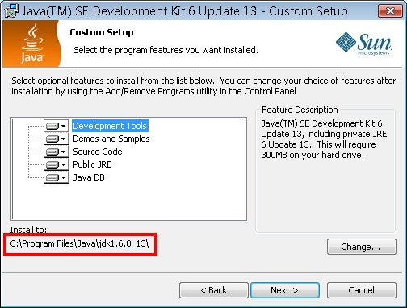
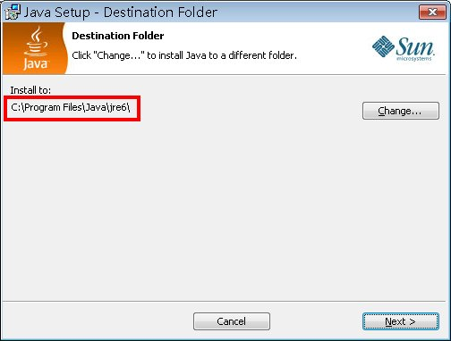
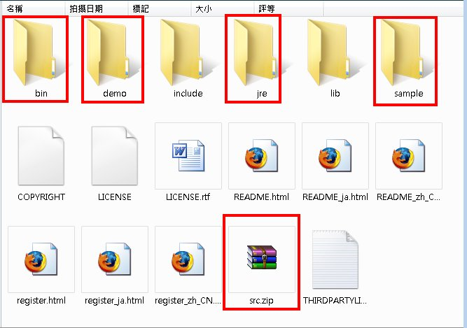
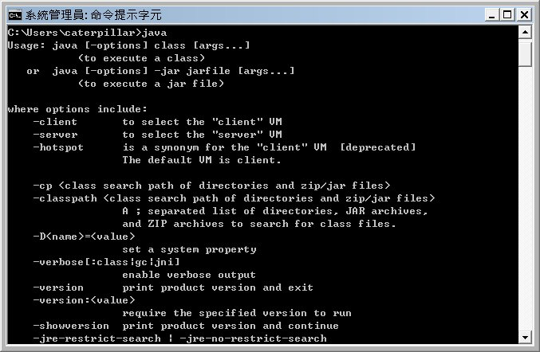

|
|
JDK就是 Java Developer Killer...
呃！Java Development
Kit。對初學者來說，JDK確實很不友善，這大概是Java陣營的哲學吧！假設你什麼都懂，也因此裝好JDK之後，該自己設定的你就要自己設定。（這跟
另一陣營的哲學大不相同，假設你什麼都不懂，因此一切都幫你設好，你想自己設都沒門！XD） 要下載JDK，你要連接到以下網址： http://java.sun.com/javase/downloads/index.jsp 你要下載的是當中的JDK N Update XX，其中N是JDK版本號，Update的意思則是，在發佈JDK之後，每隔二到三個月會針對使用者回報的BUG進行修正，並發佈一個修正版JDK，Update就是指該JDK是該版本發佈以來第幾個修正版。 在網頁中還可以看到 JRE N Update XX，先前在 什麼是 JRE？ 中提過如果你的程式寫好了，客戶要執行你的程式，只需要裝JRE就可以了，那就是請他們下載這個版本。不用幫客戶裝JDK，因為他們不需要編譯器之類的東西。 在安裝JDK時進行到這個畫面時，先不要習慣性地直接按下一步，你要了解當中每個選項安裝的作用。  Development Tools就是安裝編譯器之類的工具程式，要開發Java程式，這個自然得安裝。Demos and Samples則是一些JDK所附的範例程式，像是小作家、Applet、視窗程式元件展示等，這些範例程式都附有原始碼，日後可以參考它們是如何實作 的。Source Code則是JRE中Java SE API的實作程式碼，有時候，你會需要看看Java SE API原始碼，了解一下內部運作機制。Public JRE就是剛剛在網站上看到的JRE N Update XX，所以其實下載了JDK N Update XX，就同時下載了JRE N Update XX。Java DB則是一個使用Java所實作的Java資料庫，前身是 Apache Derby 資料庫。 除了Development Tools之外，另外四個選項，其實都可以不安裝，這不影響後續的程式開發。不過為了日後可以參考一些原始碼、直接在Public JRE上作測試等、或開發簡單的資料庫程式，建議是一併安裝。 不安裝Public JRE？那怎麼執行寫好的Java程式呢？不是說要有JRE才可以執行嗎？其實，JDK自己本身附有一個JRE，相對於Public JRE這個名稱，JDK自己所附的JRE稱之為Private JRE，你只要有裝JDK，就一定會有Private JRE可以用，稍後會跟你說這個Private JRE裝在哪邊。安裝Public JRE，只不過是為了方便有另一個JRE來模擬客戶端的JRE環境而已。 所以，JDK就包括了JRE，JRE包括了Java SE API與JVM。 在安裝時注意到「Install to」，你要記得裝到哪去了，之後要設定PATH變數時會用到！ JDK安裝完後，如果你有選擇安裝「Public JRE」，則會再出現下面的視窗，這是在安裝Public JRE的畫面，同樣地，你要記一下安裝到哪裡去了。  裝好JDK之後，在JDK的目錄中，會有以下的東西：  bin中存放的就是Development Tools。demo與sample中存放的就是Demos and Samples。jre則是JDK的Private JRE（不是安裝選項中的Public JRE）。src.zip則是Source Code，也就是Java SE API的實作原始碼。 如果你有選擇安裝Java DB，則預設會安裝在C:\Program Files\Sun\JavaDB之中。 在Windows中在開始功能表中執行「程式集／附屬應用程式／命令提示字元」，鍵入java指令，看到這個畫面，表示你的JDK「可能」裝好了：  |